E-Seal
Bringing seal activity into one operational view
A web dashboard that connects asset totals, seal status, weekly activity and transaction records.
What E-Seal brings together
The E-Seal designs provide an administrative overview of assets and seal activity. The dashboard brings together status summaries, weekly activity, location information and recent transactions. A transaction table identifies records through company, asset, seal serial number, scan timestamps and status.
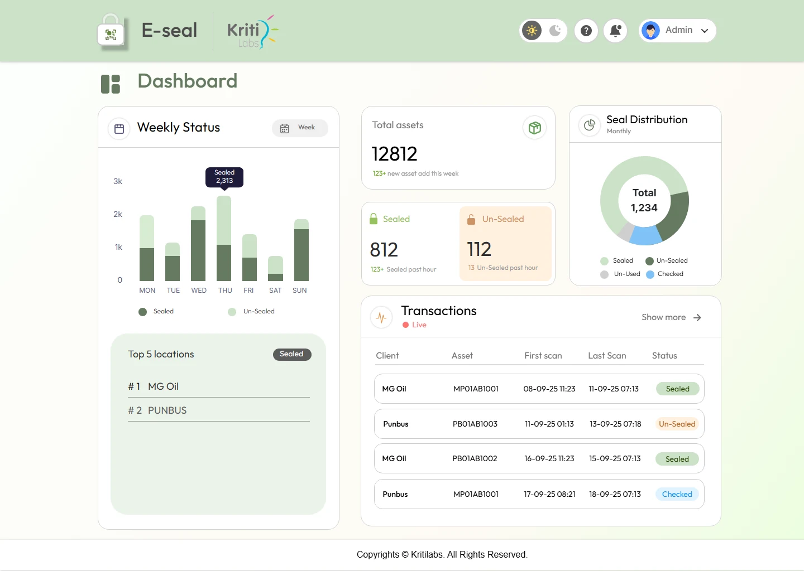
The challenge
An overview is useful only if it leads to records an operator can identify. Counts can indicate a pattern, while individual transactions explain what happened to a particular asset or seal. The design challenge is to place these two levels of information together without making the dashboard as dense as a full transaction report.
Who it serves
The visible experience is designed for administrators and operational teams reviewing seal records. The file demonstrates dashboard and transaction-table design, with light and dark dashboard variants. It does not establish the full physical sealing workflow or the mechanism that generates each scan.
How the work moves
Administrator
- Sign in
- Review asset and seal summaries
- Inspect activity or location information
- Open transactions
- Identify a record by asset, serial number and timestamps
- Use the available View action
Key decisions
1. Summary metrics establish the scale of activity.
Total assets and seal-distribution information offer a starting point before the user moves into individual records. Weekly activity adds a time-based view, while location information provides another way to interpret the overview.
2. Recent transactions make the overview concrete.
Asset and serial identifiers sit alongside scan times and state labels, allowing a record to be distinguished from similar entries. The separate transaction table provides a larger workspace for this more detailed information.
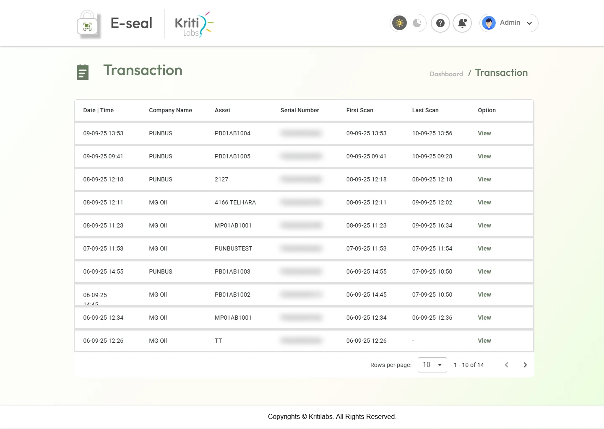
3. One hierarchy, two themes.
Light and dark variants explore how the same information hierarchy can work across different display preferences.
Drag across the panel to compare the light and dark dashboards.
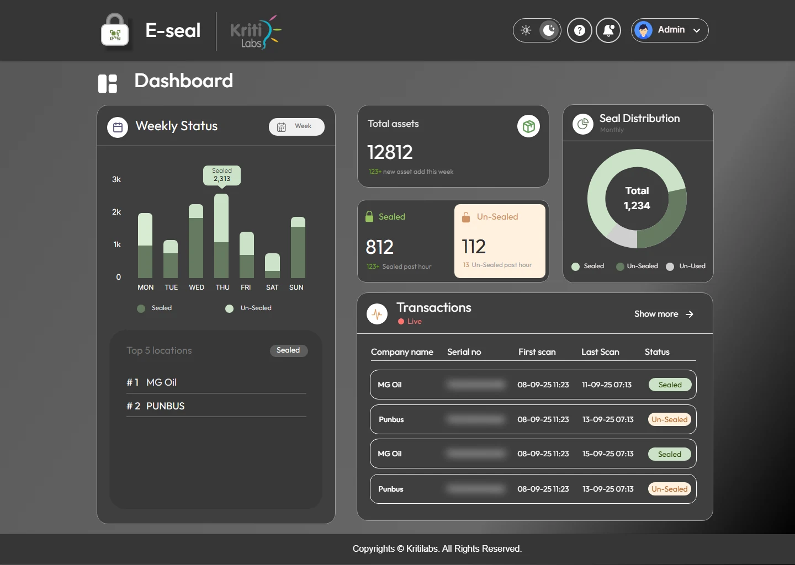
What the design achieves, and how to test it
The design connects aggregate visibility with identifiable transaction records. Validation should ask users to find a specific seal, interpret a missing scan time and explain the difference between status categories. Measure lookup completion and interpretation errors before claiming an efficiency gain.
Operational dashboards need a path from a number to an identifiable record.
The most useful story here is how the overview and transaction table support different levels of inspection.
Design decisions
E-Seal has two sides: a web dashboard for administrators and a mobile app for the people who seal and unseal assets in the field. Four decisions shaped them. Each story follows the same structure: the situation before, the alternatives, the reasoning and trade-off, what I designed, and what can honestly be said about the result.
1Web for oversight, mobile for the field
Two purpose-built surfaces instead of one app stretched across both jobs.
Strategic · Read story
2One scan screen, three ways to read a seal
QR, RFID and NFC share the same card, fields and Seal action.
Strategic · Read story
3Connecting the RFID reader inside the app
Not connected → pick a device → connected → scan, without leaving the task.
Tactical · Read story
4A dashboard that leads to records
Counts and a live feed on top, the full transaction table one click away.
Tactical · Read story
- ExplorationLo-fi wireframes and drafts from my Figma files
- ConceptualAn option described for comparison, not a design I made
- Final designThe hi-fi screens
Decision 01 · Strategic
Why oversight lives on the web and sealing lives on a phone
An administrator reviewing a week of seal activity and an operator sealing a tanker at the gate need very different tools.
Before the decision
The two jobs share data (assets, seals, scans) but almost nothing else. One happens at a desk across many records; the other happens standing next to an asset, one seal at a time, with a scanner in hand.
The turning point
Reasoning
Each surface can be shaped around its moment of use: wide screens for comparison and lookup, a single obvious action for someone with their hands full.
Trade-off
Two products to maintain, and two visual languages to reconcile. The web uses sage green with Outfit and Roboto; the app uses Inter with a brighter green.
What I designed
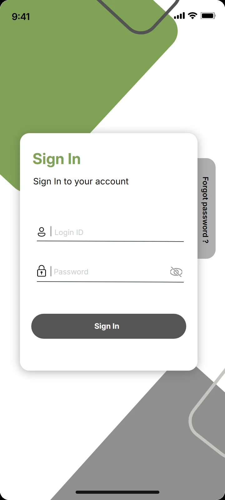
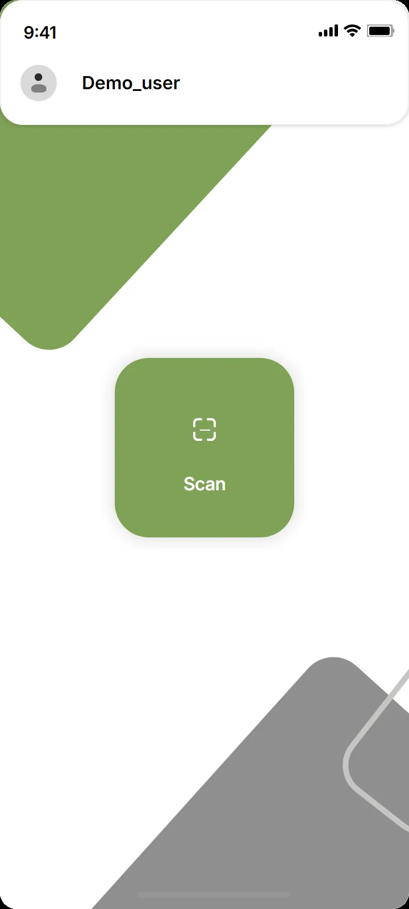
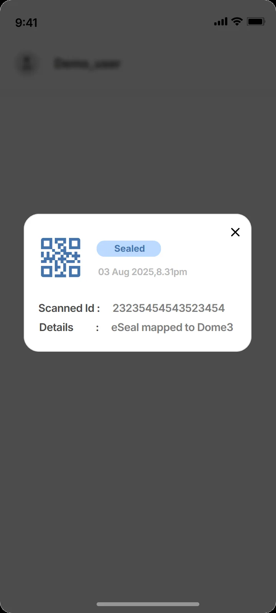
- Sign inLogin ID and password
- HomeOne action: Scan
- SealedConfirmation with the mapped asset
Result
Administrators get a desk tool for patterns and records; field staff get a phone tool with one primary action. Whether the two stay consistent enough is a question for the next round.
- Match between system and real world
- Flexibility and efficiency of use
Decision 02 · Strategic
Why QR, RFID and NFC share one scan screen
The seal might carry a QR code, an RFID tag or an NFC chip. The operator's job is the same either way.
Before the decision
Each technology reads a seal differently: a camera for QR, a paired Bluetooth reader (the "Ebaton") for RFID, the phone's own antenna for NFC. Designing them separately would mean three flows for one task.
The turning point
Reasoning
The technology is a detail of how the code arrives. Keeping one card means the operator learns the sealing task once, and only the header and icon change.
Trade-off
A shared card has to fit the most complex case. RFID's device pairing adds states the other two never need (see Decision 03).
What I designed
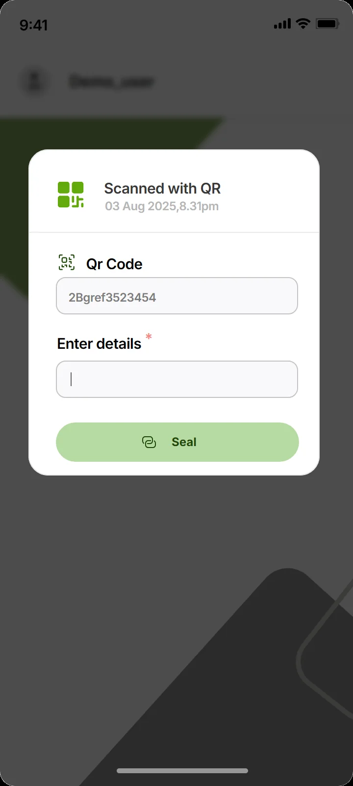
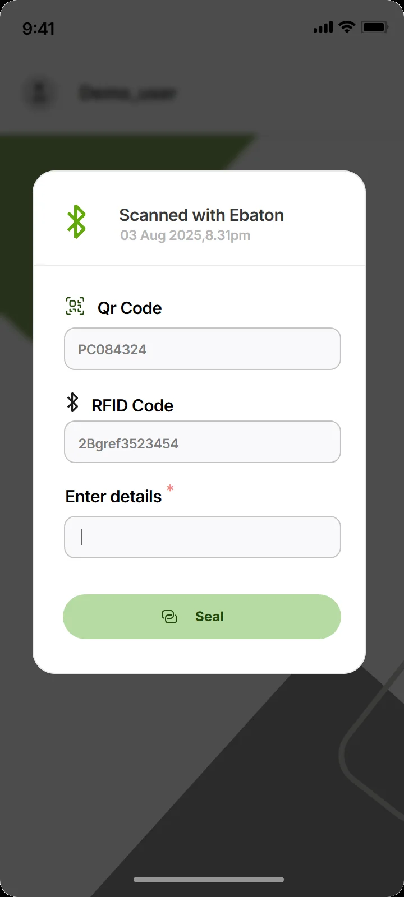
- QRCamera scan
- RFIDVia the paired Ebaton reader
- NFCThe phone's own antenna
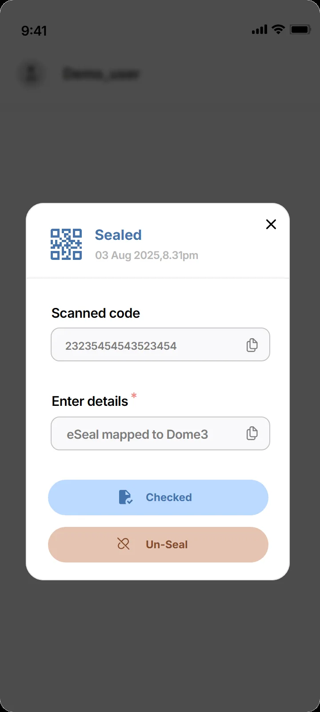
- SealedSame confirmation for every method
- Un-sealChecked or Un-Seal on an existing seal
Result
Three input technologies lead to one sealing flow and one confirmation. Time to seal and errors by method would show whether the shared card holds up.
- Consistency and standards
- Recognition rather than recall
- Visibility of system status
Decision 03 · Tactical
Why the RFID reader connects inside the app
If the reader isn't connected, the scan simply doesn't happen, and the operator may not know why.
Before the decision
RFID scanning depends on a separate Bluetooth reader, the Ebaton. Without in-app handling, the operator would have to leave the task, find the device in the phone's Bluetooth settings and come back.
The turning point
Reasoning
The connection is part of scanning, so it belongs in the scan card. Naming the problem and offering the fix in place keeps the operator on task.
Trade-off
Four extra states, and a device list that must handle several readers nearby (Ebaton_1 to Ebaton_5) and connection failures.
What I designed
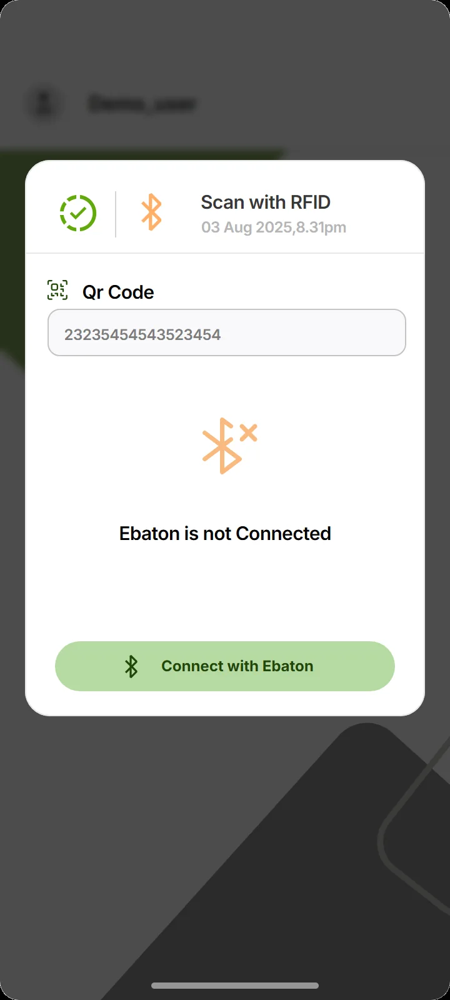
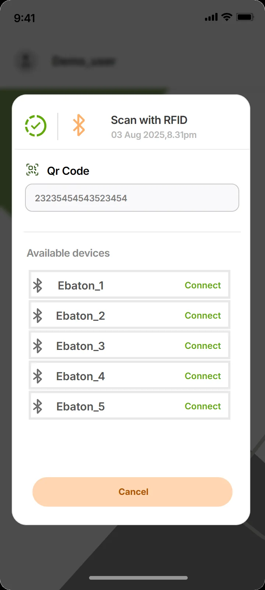
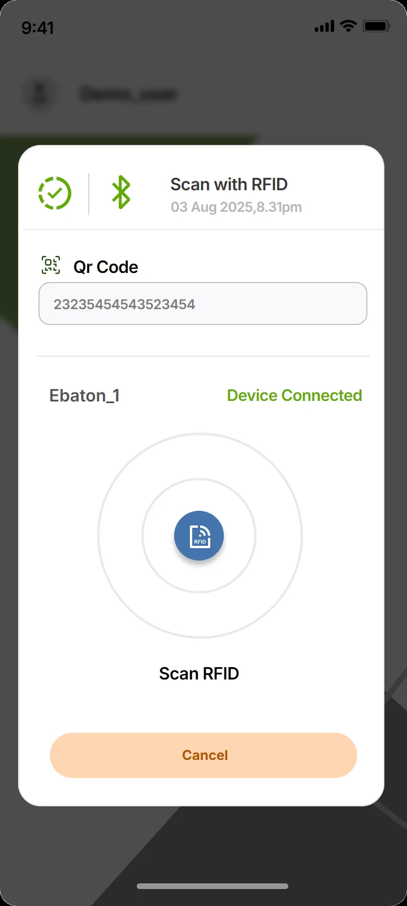
- Not connectedThe problem, named, with one fix
- Pick a readerNearby devices, each with Connect
- ConnectedReady to Scan RFID
Result
Pairing happens inside the sealing task with clear connected and not-connected states. Failure and reconnection states are still to be designed.
- Visibility of system status
- Help users recover from errors
- User control and freedom
Decision 04 · Tactical
Why the dashboard leads to individual records
"112 un-sealed" is a worry. "PB01AB1004, first scanned 13:53, last 13:56" is something you can act on.
Before the decision
The lo-fi wireframe already set out the pieces: a weekly chart, summary cards, a distribution ring, a locations list and a table preview. The question was how numbers and records should relate on one screen.
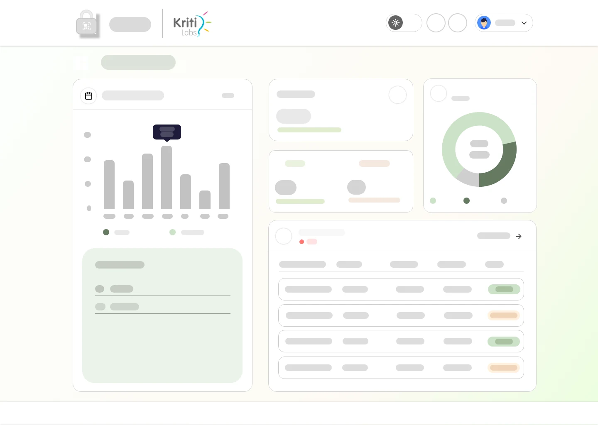
The turning point
Reasoning
A count is only useful if you can follow it to the records behind it. The live feed shows the latest few; the table gives room to search and compare.
Trade-off
Five widgets on one screen. Grouping them into cards and keeping the table to a short preview stops the dashboard turning into a report.
What I designed
Result
Every summary has a route to the records behind it. Lookup completion and interpretation errors would show whether it works.
- Information hierarchy
- Progressive disclosure
- Recognition rather than recall
Explorations along the way
The scanning flow in the order it unfolds, then the app icon directions I explored.
- 1
HomeOne large Scan button.
- 2
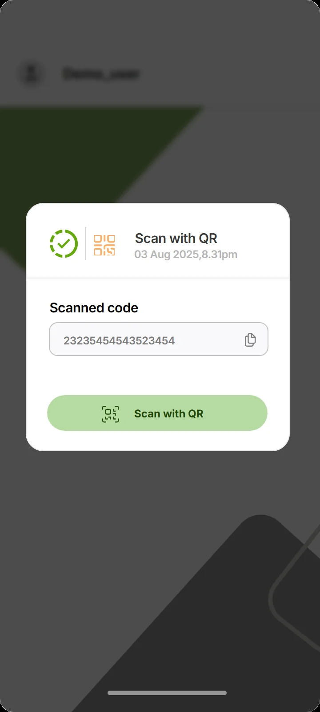
ScanMethod, time and the scanned code.
- 3
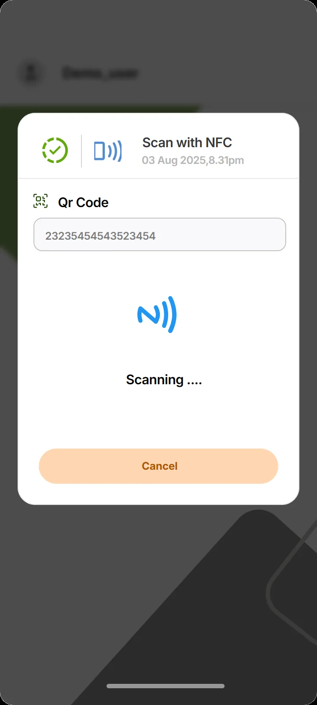
Waiting"Scanning…" with Cancel.
App icon explorations
Designing consistency across desk and field
These values come from the hi-fi frames. The web file also defines colour variables (for example Grey/800 #222529).
Typography
- Weekly StatusWeb · Outfit 12–18 · headings and labels
- 09-09-25 13:53 · PUNBUS · ViewWeb · Roboto Light / Bold 14.4 · table data
- Scanned with EbatonApp · Inter Semi Bold 12–16 · everything
Colour and meaning
- #657A61Web · sage primary
- #CCE2C8Web · sealed tint
- #212529Web · text
- #80A256App · Scan, Seal
- #62A90BApp · connected
- #4574AEApp · icons, info
- #2A2A2AApp · dark buttons
- #F78787App · required, errors
Contrast check
I checked the main pairs against WCAG 2.2 text contrast.
| Pair | Ratio | AA text |
|---|---|---|
| Web text #212529 on sealed tint #CCE2C8 | 11.2:1 | Pass |
| White on app blue #4574AE | 4.8:1 | Pass |
| White on web sage #657A61 | 4.7:1 | Pass |
| App secondary text #7C7C7C on white | 4.2:1 | Fail |
| Connected #62A90B on white | 2.9:1 | Fail |
| Web muted text #999999 on white | 2.8:1 | Fail |
| Required marker #F78787 on white | 2.4:1 | Fail |